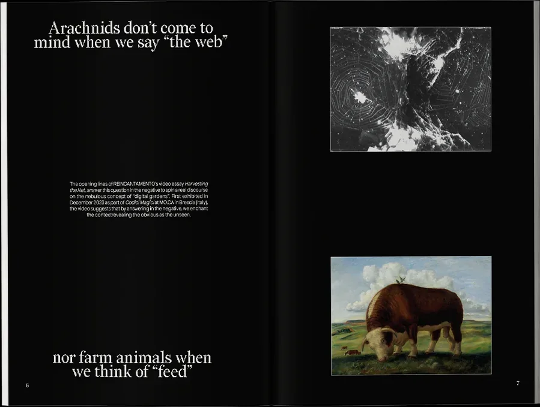
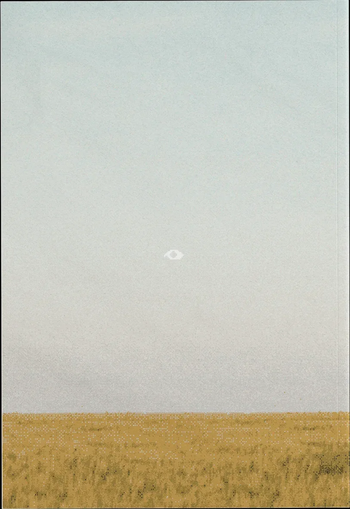
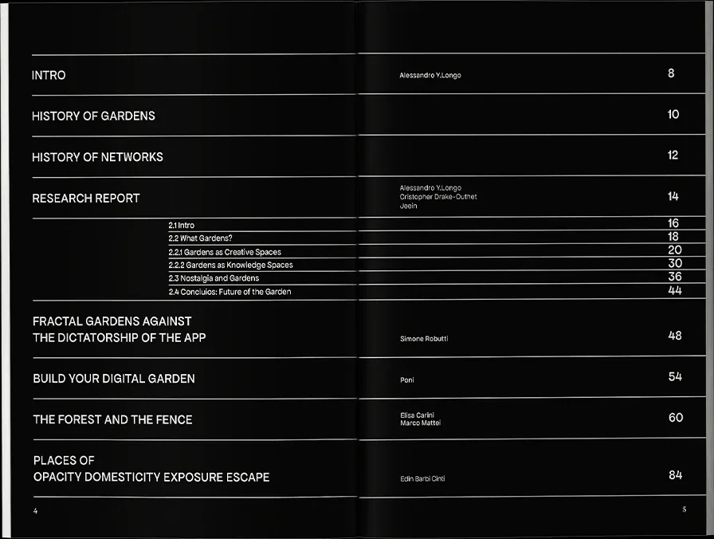
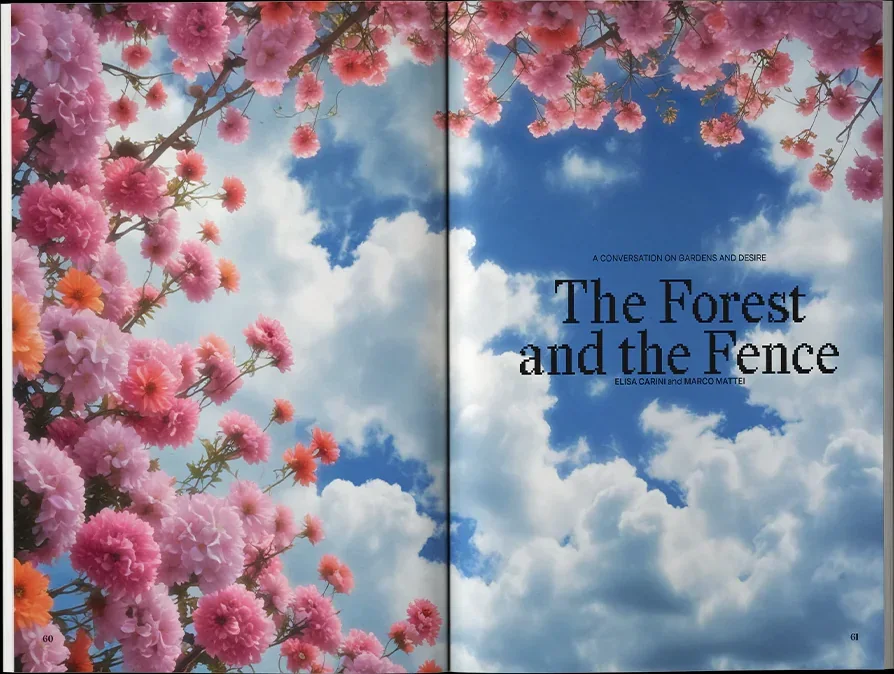

nCHANT is REINCANTAMENTO’s new monographic magazine. As an oblique optical device for exploring unusual ideas, nCHANT represents a polyphonic, anti-disciplinary chorus of voices examining concepts at the membrane between culture and technology.
nCHANT’s inaugural issue, “On Digital Gardens”, expands and situates the concept of digital garden: symbolic spaces that embody the desire for a post-capitalist Internet.
Digital gardens represent realms for autonomous knowledge organization and self-expression, elements that commercial platforms continue to short-circuit. They function as fields of seeded ideas and unfinished thoughts, waiting for their time to flourish, die, and be born again. A wilder, more personal Web waiting to be rediscovered.
- Contributors
- Alessandro Y. Longo
- Christopher Dake-Outhet
- Simone Robutti
- Federico Poni
- Elisa Carini
- Marco Mattei
- Edin Barbi Cinti
- Design
- Giorgio Craparo
- Proofreading
- Gabriele Tomasi
- Printer
- SkillPress, Venice
- Funded by
- Trust Community
- Special thanks
- Anna Fasolato
- Jeein
- Kinked


Contents
This 92-page publication features a research report based on interviews with 20+ practitioners from the Trust community in Berlin, alongside thoughts on fractal software structures, practical guides for creating self-hosted digital gardens, philosophical dialogue on desire, and spatial analyses of garden environments.
Specifications
Dimensions 176 × 250 mm. 92 pages. ISSN 3052-1556. Graphic design by Giorgio Craparo, printed by SkillPress in Venice, Italy. Funded by the Trust Community.
Availability
Released May 17, 2025 in a limited run of 50. Not available.
